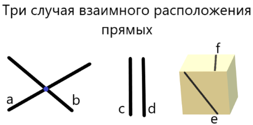
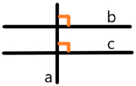
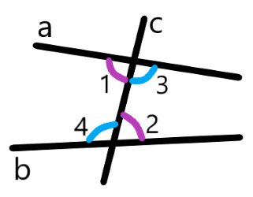
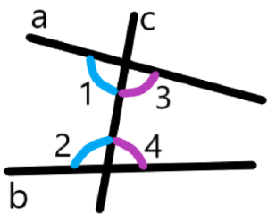
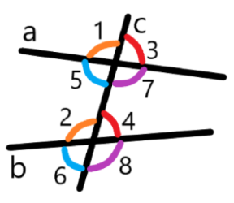

Признаки параллельности двух прямых
Определение 26: Прямая называется секущей по отношению к двум другим прямым, если она пересекает их в двух разных точках.







Нашли ошибку или неточность? Сообщите нам! Контакты можно найти на главной странице .